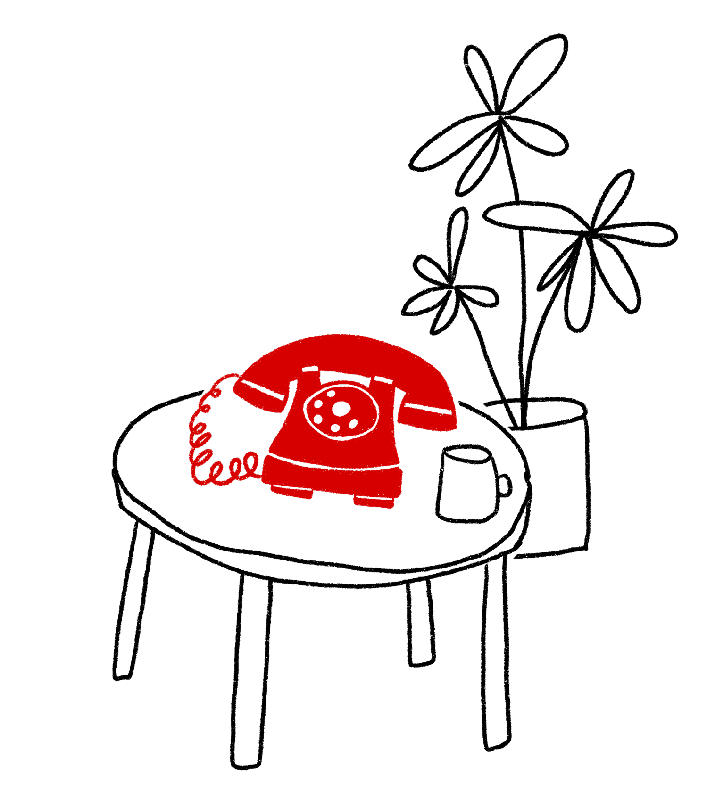

i turned a landline phone into my new alarm clock. every morning, my phone rings and i need to physically get out of bed and pick it up to turn it off. once i pick up the phone, a randomly selected message from one of my friends (aka you) plays so i can start my day all happy and stuff.
how to leave a message: you have two fun options to join the rotation of morning messages: